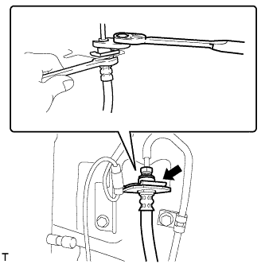
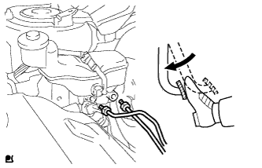
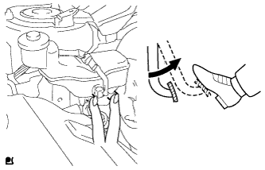

Front Flexible Hose NO.1 Installation |
| 1. Install Front Flexible Hose NO.1 |
Install a new gasket to front brake flexible hose No.1.
 |
Install front brake flexible hose No.1 to the disc brake cylinder assembly with the union bolt.
| Drive Type | Installation Position | Identification Color |
| 2WD | RH | Yellow |
| LH | White | |
| 4WD | RH | Orange |
| LH | Green |
 |
Install the flexible hose bracket and speed sensor bracket to the absorber bracket with the 2 bolts.
 |
Secure the flexible hose with a new clip.
Hold front brake flexible hose No.1 with a wrench and, using a union nut wrench (10mm), connect front brake flexible hose No.1 to the brake tube.
| 2. Install Front Tire |
| 3. Fill Brake Fluid |
 |
Stand the brake fluid can upside down over the reservoir.
| 4. Bleed Brake Master Cylinder Assembly |
 |
Using a union nut wrench (10mm), disconnect the 2 brake tubes from the master cylinder.
 |
Slowly depress the brake pedal and hold it.
 |
Block the tube holes with your fingers and release the brake pedal.
Remove your fingers, slowly depress and hold the brake pedal, block the tube holes again and release the brake pedal; repeat this 3 or 4 times.
 |
Using a union nut wrench (10mm), connect the 2 brake tubes to the master cylinder assembly.
| 5. Bleed Brake Line |
Connect a vinyl tube to the bleeder plug.
Depress the brake pedal several times, and loosen the bleeder plug with the brake pedal depressed. (*1)
When fluid stops coming out, tighten the bleeder plug and release the brake pedal. (*2)
Repeat (*1) to (*2) until there is no air in the brake fluid.
Bleed the air from the brake line of each wheel in the same way.
| 6. Bleed ABS & Traction Actuator Assembly |
Turn the IG OFF and depress the brake pedal 20 times or more.
With the IG still OFF, connect the SST (TaSCAN) to DLC3.
Turn IG ON.
Turn the SST (TaSCAN) power switch ON, select "Menu (Work Support)" → "ABS/VSC/ECB" → "Air Bleeding" and execute it.
Bleed Actuator Intake System
On the SST (TaSCAN) menu screen, select intake system bleeding and execute it.
Loosen the bleeder plug of the right front wheel. (*1)
Operate the SST (TaSCAN) to operate the actuator.
Check on the SST (TaSCAN) screen that operation has stopped.
Temporarily tighten the bleeder plug. (*2)
Repeat the procedure from (*1) to (*2) until the air is completely bled.
Tighten the bleeder plug.
Perform the same procedure for the right rear wheel as for the right front wheel.
Bleed Actuator Pressure Reduction System
Execute pressure reduction system bleeding on the SST (TaSCAN) menu screen.
Loosen the bleeder plug of the right front wheel. (*3)
Operate the actuator using the SST (TaSCAN), and at the same time fully depress the brake pedal and hold it.
Tighten the bleeder plug and release the brake pedal. (*4)
Repeat the procedure from (*3) to (*4) until the air is completely bled.
Tighten the bleeder plug.
Perform the same procedure for the other 3 wheels as for the right front wheel.
Perform normal brake line bleeding again by pumping the brake pedal.
| 7. Inspect for Brake Fluid Leaks |
| 8. Inspect Brake Fluid Level |
Check the brake fluid level, and add fluid up to the MAX line of the reservoir if necessary.